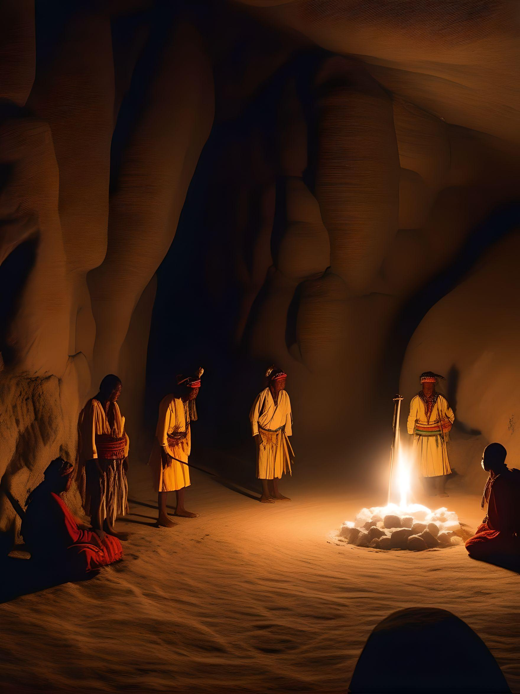
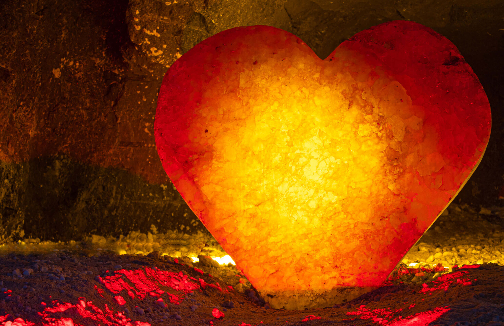
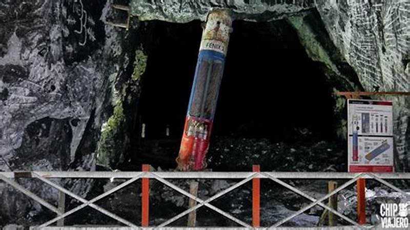

Hace mucho tiempo Colombia estaba bajo el oceano y por temas naturales, se evaporó y dejó la sal como testimonio de riqueza.
Hace 350 millones de años en la época precolombina, los indígenas muiscas, quienes habitaban en la zona, utilizaban la sal para diferentes rituales y actividades económicas.
Posteriormente, los españoles llegaron al territorio y descubrieron la enorme cantidad de sal que había en la región. Desde entonces, la extracción y comercialización de esta materia prima se convirtió en una importante actividad económica en Nemocón.

Fundador
La Mina de Sal de Nemocón fue fundada en 1600 por el Oidor Luis Enríquez.
Este lugar, cuyo nombre en lengua muisca significa “Lamento de Guerrero”, se estableció después de la fundación de Zipaquirá.
¿Qué es exactamente la sal de Nemocón?
Para entender la importancia de Nemocón, primero debemos comprender qué es la sal que se extrae. Esta no es una sal común, sino sal gema, también conocida como halita, formada hace millones de años y ahora extraída para diversos usos.
¿Que relevancia tiene?
Desde su descubrimiento por los españoles, la extracción y comercialización de sal se consolidó como una importante actividad económica en Nemocón. La mina ha estado en funcionamiento durante varios siglos, contribuyendo significativamente a la economía local y regional. Actualmente, la mina se utiliza para la producción de sal de mesa, lo que destaca su continua contribución a la economía colombiana

Atractivos turisticos
En los últimos años, las Minas de Sal de Nemocón se han transformado en un importante centro turístico. Miles de visitantes acuden anualmente a explorar sus impresionantes túneles subterráneos y a maravillarse con la catedral de sal construida en su interior.
Entre ellos...
El Fenix 2

la cámara de la cápsula fénix 2 de la película "Los 33", protagonizada por Antonio Banderas.
Los 33 es una película dramática chilena dirigida por la mexicana Patricia Riggen. Rodada en Colombia y Chile, fue estrenada el 6 de agosto de 2015 en Chile y el 13 de noviembre de 2015 en Estados Unidos.2 Está protagonizada por Antonio Banderas, Juliette Binoche, Mario Casas, Rodrigo Santoro, Juan Pablo Raba, James Brolin, Lou Diamond Phillips y Bob Gunton entre otros.3 La película se rodó en Copiapó, Chile y Nemocón, Colombia, y el rodaje en Chile comenzó el 4 de febrero de 2014.
El Cacique Nemequene
Aguerrido líder Muisca y excelente estratega militar que realizó impresionantes hazañas en su corta vida. Aparte de su influencia e importancia, dio origen a la leyenda del árbol de los sueños, una historia con más de 400 años de tradición oral, que explica por qué los indígenas decidieron esconder sus tesoros y posesiones más preciadas para defenderlas de los invasores.
Espejos Naturales de Salmuera
Antiguos tanques para disolver la roca de sal. Gracias a la reflexión que producen los cristales de sal, se crea una ilusión óptica sorprendente y mágica. Pasado el momento de sorpresa, puedes detallar la hermosura del lugar, la iluminación y el reflejo puro, exacto, preciso; de la Salmuera. En este lugar, donde se ubicaban los antiguos tanques de saturación, se disolvía la roca de sal en agua dulce.
¿Que impacto tiene?
La Mina de Sal de Nemocón ha tenido un impacto considerable en la economía local de la región. Este sitio, que fue una importante fuente de extracción de sal durante más de 400 años, ha atraído a visitantes y turistas, impulsando la economía local a través del turismo. Esta mina, siendo la segunda más grande de Colombia, ha extraído más de 8 millones de toneladas de sal entre 1816 y 1968, antes de convertirse en museo. La experiencia turística que ofrece, incluyendo una ruta subterránea de 1,600 metros, ha sido favorablemente comparada con experiencias en otras minas de sal, ofreciendo a los visitantes una inmersión profunda en la industria de la minería de sal más allá de ser una simple atracción turística
Ubicación
La Mina de Sal de Nemocón, ubicada a una hora al norte de Bogotá, es un lugar cautivador por su autenticidad. A 80 metros bajo tierra, los visitantes recorren 1,600 metros de túneles por los que se extrajeron cerca de 8 millones de toneladas de sal entre los años 1816 y 1968